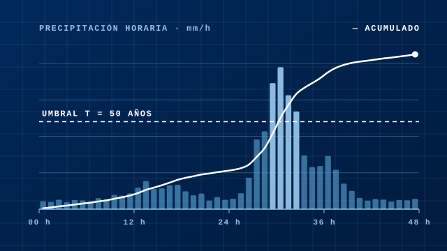
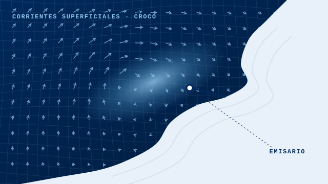
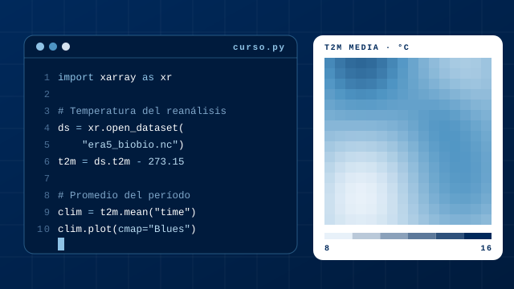
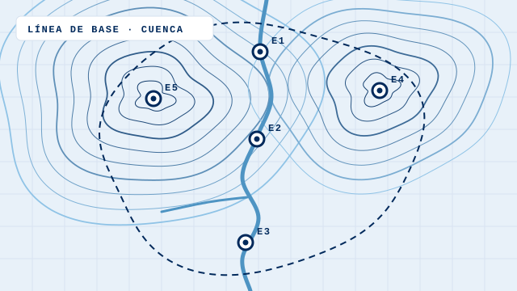
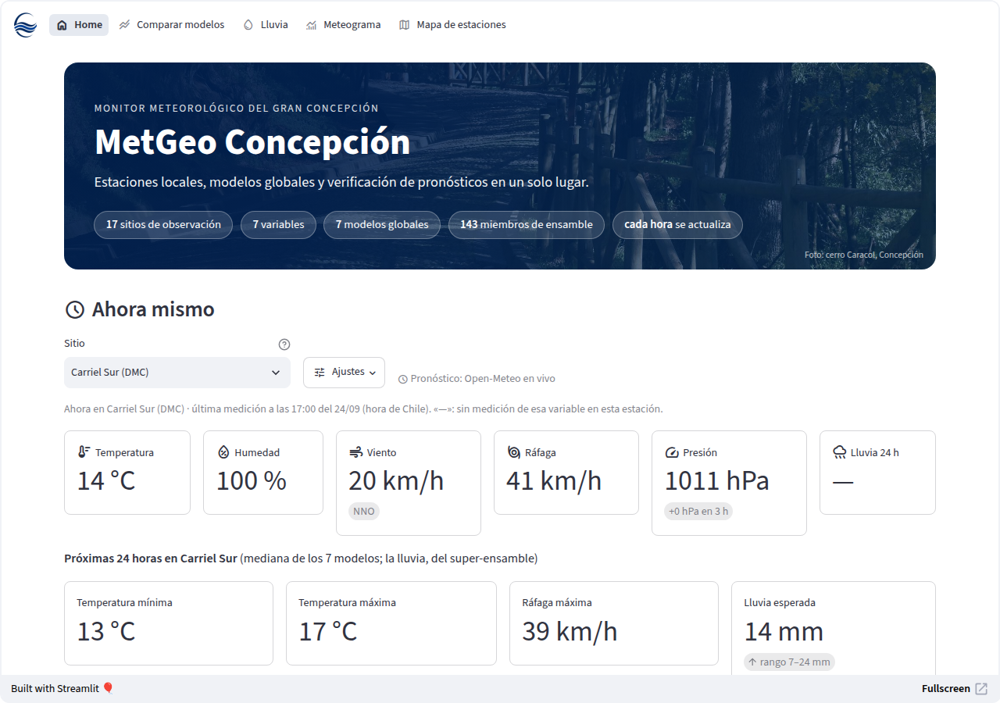
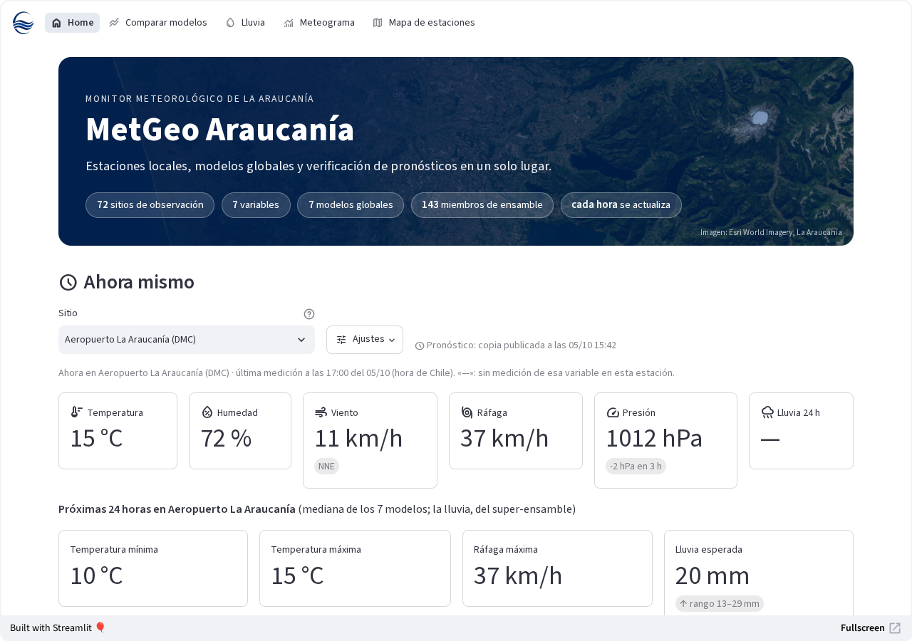
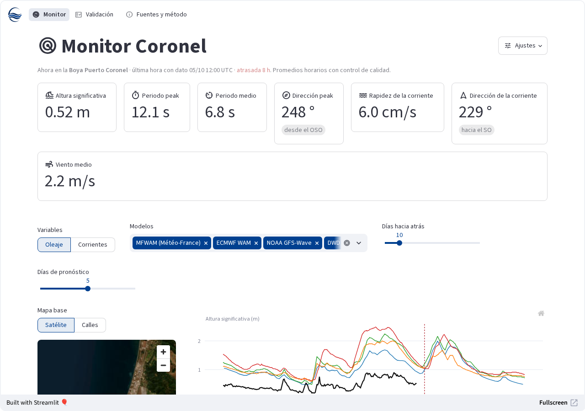

Consultora geofísica · Concepción, Chile
Soluciones desde la geofísica para la toma de decisiones
Integramos el conocimiento de la Tierra, el océano y la atmósfera para la resolución de problemas, ofreciendo mejores soluciones para nuestro territorio.
Qué hacemos
Ciencias de la Tierra aplicadas a tu problema
Cada servicio se aborda desde nuestras especialidades: modelación numérica, análisis de datos, asesoría y monitoreo, traduciendo los resultados en recomendaciones que se pueden aplicar.

Estudios técnicos periciales
Peritajes y consultoría ante temporales, lluvias intensas, marejadas y sequías, también para liquidaciones de seguros.
Ver el servicio →
Modelación numérica y monitoreo de pronósticos
Modelos de la atmósfera, el océano y el agua, y tableros que comparan cada hora lo observado con lo pronosticado.
Ver el servicio →
Capacitaciones técnicas
Cursos a la medida en hidrología, modelación, programación científica e IA generativa aplicada a las geociencias, con los datos de tu equipo.
Ver el servicio →
Estudios de evaluación ambiental
Componentes de clima, agua y cambio climático para una DIA o un EIA en el SEIA, según las guías del SEA.
Ver el servicio →Pronóstico de hoy · Concepción
El tiempo hora a hora
Cargando el pronóstico de hoy…
Mediana de siete modelos globales (GFS, ECMWF, ICON, GEM, JMA, UKMO y Météo-France) según Open-Meteo, a la hora local de Chile. En el viento, la flecha indica hacia dónde sopla; debajo, la velocidad media y (la ráfaga) en km/h. Es el mismo pronóstico que enviamos cada mañana en el newsletter, pero con detalle de cada hora.
Cómo trabajamos · Por qué MetGeo
Ciencia rigurosa y calidad en cada entrega: informes reproducibles, herramientas propias y cercanía con el territorio.
Equipo de especialistas
Geofísicos especializados en diferentes áreas de las ciencias de la Tierra, con experiencia en docencia y centros de investigación.
Modelos numéricos
Ejecutamos modelos atmosféricos y oceanográficos en infraestructura de alto rendimiento y en la nube cuando el problema lo requiere.
Calidad del servicio
Cada informe explica la metodología, la validación contra mediciones y las limitaciones, y entregamos también los datos y el código para que tu equipo los revise y siga usándolos.
Herramientas diversas
Elegimos la herramienta según el problema: Python, MATLAB, R, C/C++ y SQL, sistemas de información geográfica como ArcGIS y QGIS, y modelos como WRF y CROCO.
Cerca del territorio
Estamos en Concepción, conocemos el clima y el agua del sur de Chile y podemos visitar tus instalaciones.
Ciencia abierta
Hacemos divulgación científica: mantenemos monitores meteorológicos y oceanográficos públicos y compartimos cada día las noticias científicas más relevantes.
Noticias científicas
Lo último en ciencias de la Tierra y más
- Cargando las noticias de hoy…
Monitores en línea
Lo observado frente a lo pronosticado
Tres herramientas abiertas que reúnen las mediciones reales y los modelos globales de pronóstico, para ver qué viene y comparar los modelos entre sí y contra la observación.

MetGeo Concepción
17 sitios del Gran Concepción frente a 7 modelos globales y un super-ensamble de 143 miembros.
Conoce el monitor →
MetGeo Araucanía
72 sitios de La Araucanía, en costa, valle y cordillera, con los mismos modelos y el super-ensamble.
Conoce el monitor →
MetGeo Coronel
La boya de Puerto Coronel frente a los modelos globales de oleaje y corrientes.
Conoce el monitor →¿Tienes un proyecto o un evento que estudiar?
Cuéntanos qué necesitas y te proponemos cómo abordarlo.